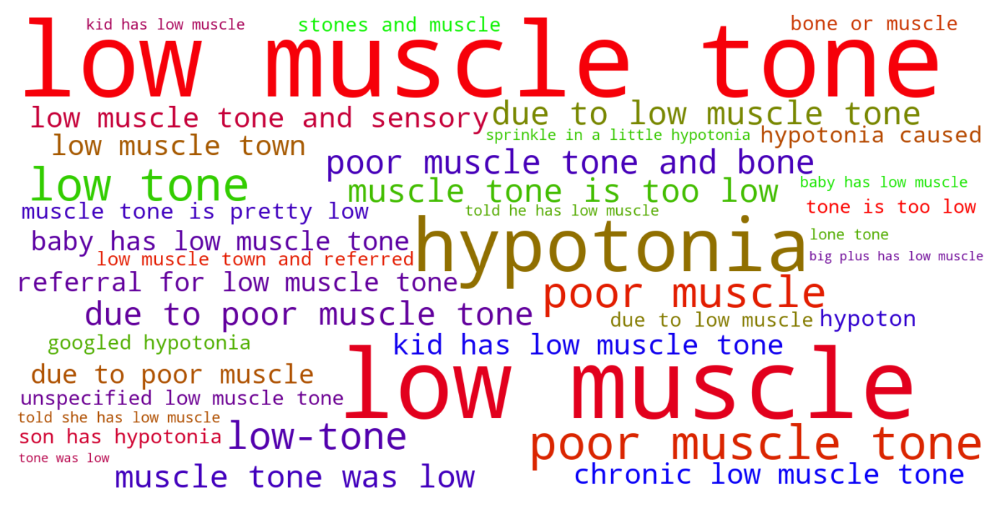
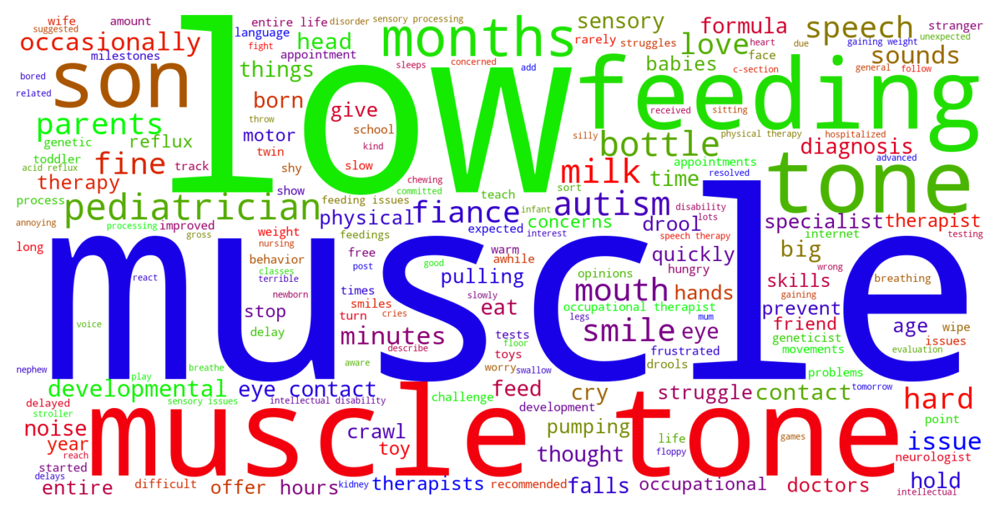

Jump to section:
Samples from Social CorpusHits per UMLS Alias on Social Corpus
Word Cloud Comparison
Embedding Space Comparison
Nearest Neighbors by Semantic Type
Related Analysed Concepts
Samples from Social Corpus
Our pediatrician was concerned with her low muscle tone , as first time parents we thought we were lucky with a super chill baby .
Confidence: 1.000. Reddit link
How could I not notice my 7 y / o can't swing from the monkey bars without faceplanting because her muscle tone is too low ?
Confidence: 0.877. Reddit link
And then sent me home with the diagnosis of kidney stones and muscle pain .
Confidence: 0.693. Reddit link
Baby with hypotonia Hi all , My pediatrician noticed early in my son's life that he had low muscle town and referred us to physical therapy .
Confidence: 0.632. Reddit link
Consensus was that our kid has low muscle tone ( due to side effects from meds as a newborn ) and will struggle with lots of things .
Confidence: 0.808. Reddit link
- He has very low muscle tone and still feels " floppy " compared to other babies .
Confidence: 1.000. Reddit link
Our baby girl is 6 weeks old tomorrow and we've just been told she has low muscle tone .
Confidence: 1.000. Reddit link
Last year he said her muscle tone was low but she was otherwise normal .
Confidence: 0.829. Reddit link
It seems to have gotten less and less frequent since she was born , and my doctor at my visit a month ago assured me that it's due to low muscle tone from being pregnant .
Confidence: 0.889. Reddit link
I've googled hypotonia and I don't know if he actually has that - not sure if it's that bad - or he just has unspecified low muscle tone .
Confidence: 0.745. Reddit link
Hits per UMLS Alias on Social Corpus
-
low muscle tone
57 hits
-
hypotonia
12 hits
-
poor muscle tone
6 hits
-
low muscle tones
1 hits
-
muscle tone poor
1 hits
-
tone poor muscle
1 hits
-
muscle hypotonia
0 hits
-
muscle hypotonicity
0 hits
-
hypotonus
0 hits
-
hypotonia muscular
0 hits
-
poor muscle tone finding
0 hits
-
hypotony muscle
0 hits
-
decreased muscle tone
0 hits
-
muscle tone decreased
0 hits
-
hypomyotonia
0 hits
-
muscular hypotonia
0 hits
-
hypotonia nos
0 hits
-
loose muscle tone
0 hits
-
low or weak muscle tone
0 hits
-
muscle hypotony
0 hits
-
hypotonus nos
0 hits
-
decreased muscle tone finding
0 hits
-
hypotonia muscle
0 hits
-
muscular hypotonus
0 hits
-
hypotonus muscular
0 hits
Word Cloud Comparison
Keywords matching C0026827
Keywords matched against concept. Word size represents frequency.
Keywords co-occurring with C0026827
Co-occurrence is measured at the document-level (i.e. Reddit submissions). Frequencies are normalized to account for keywords common to all CUIs.
Embedding Space Comparison
T-SNE comparison for word embeddings learned from medical domain (EuroPMC) and social media (Reddit) independently.
Pearson correlation for union of closest 1000 neighbors: -0.188
Nearest Neighbors by Semantic Type
Most similar concepts in each of the selected UMLS semantic types. Based on concept embeddings from social corpus.
T042 (Organ or Tissue Function)
-
C0026841
Muscle tone
0.897 Similarity
-
C0517349
Muscle strength
0.727 Similarity
-
C0542330
Function joint
0.666 Similarity
-
C0231452
Flexed
0.658 Similarity
-
C0042396
Vasospasm
0.628 Similarity
-
C0006660
Mineral
0.603 Similarity
-
C1160388
Respiratory tube development
0.564 Similarity
-
C0005778
Clotting
0.563 Similarity
T184 (Sign or Symptom)
-
C0231528
Muscle pain
0.875 Similarity
-
C0015644
Writhing muscles
0.819 Similarity
-
C0037763
Spasms
0.817 Similarity
-
C0795701
Neck spasms
0.733 Similarity
-
C0030196
Pain extremity
0.727 Similarity
-
C0027796
Neuropathic pain
0.711 Similarity
-
C0016199
Flank pain
0.708 Similarity
-
C0558489
Renal pain
0.703 Similarity
T023 (Body Part, Organ, or Organ Component)
-
C4247905
Muscle body
0.865 Similarity
-
C3536743
Muscle arm
0.857 Similarity
-
C0224334
Back muscle
0.847 Similarity
-
C0448421
Pelvic muscle
0.819 Similarity
-
C0224416
Thigh muscle
0.811 Similarity
-
C1995013
Muscle group
0.800 Similarity
-
C0932441
Pelvic floor muscle
0.793 Similarity
-
C0227212
Smooth muscle stomach
0.778 Similarity
T190 (Anatomical Abnormality)
-
C4703723
Muscle issues back
0.848 Similarity
-
C0019294
Inguinal hernia
0.644 Similarity
-
C0016169
Sinus
0.613 Similarity
-
C0019270
Hernia
0.593 Similarity
-
C0281892
Left hernia
0.569 Similarity
-
C3887590
Stricture ureter
0.569 Similarity
-
C0332482
Distortion
0.564 Similarity
-
C0269185
Tipped uterus
0.561 Similarity
T046 (Pathologic Function)
-
C0026846
Muscular atrophy
0.834 Similarity
-
C0036429
Sclerosis
0.688 Similarity
-
C0021368
Inflammation
0.686 Similarity
-
C0041582
Ulcer
0.657 Similarity
-
C0333513
Fibrinoid degeneration
0.656 Similarity
-
C0013604
Swelling
0.654 Similarity
-
C4075684
Hypoxemia during surgery
0.639 Similarity
-
C0007642
Cellulitis
0.632 Similarity
T037 (Injury or Poisoning)
-
C0347721
Muscle pulled back
0.827 Similarity
-
C0080194
Strained
0.777 Similarity
-
C0554397
Vaginal muscle tear
0.752 Similarity
-
C0160420
Kidney injury
0.632 Similarity
-
C0274197
Burns stomach
0.612 Similarity
-
C0160073
Other hand sprain
0.589 Similarity
-
C0434423
Hamstrings pulled
0.578 Similarity
-
C4749866
Food lodged esophagus
0.576 Similarity
T061 (Therapeutic or Preventive Procedure)
-
C0407178
Muscle stretching
0.789 Similarity
-
C0002766
Pain management
0.653 Similarity
-
C0203995
Mobilising exercises
0.617 Similarity
-
C0262718
Kegel
0.607 Similarity
-
C0452260
Exercise strengthening
0.604 Similarity
-
C0556825
Stretching hip
0.602 Similarity
-
C0452240
Exercises therapy
0.600 Similarity
-
C1563236
Still treatment
0.599 Similarity
T047 (Disease or Syndrome)
-
C0271511
Tone deafness
0.725 Similarity
-
C0003864
Arthritis
0.719 Similarity
-
C0878544
Cardiomyopathy
0.715 Similarity
-
C0005940
Osteopathy
0.712 Similarity
-
C0030552
Muscle weakness
0.705 Similarity
-
C0152078
Pelvic pressure syndrome
0.701 Similarity
-
C0039503
Tendinitis
0.686 Similarity
-
C0013720
Eds
0.681 Similarity
T032 (Organism Attribute)
-
C0575118
Normal posture
0.667 Similarity
-
C0005902
Body surface area
0.555 Similarity
-
C0037669
Body type
0.539 Similarity
-
C0949285
Antibiotic resistance
0.532 Similarity
-
C0005885
Body composition
0.528 Similarity
-
C0751992
Fetal weight
0.527 Similarity
-
C1443333
Squatting body position
0.513 Similarity
-
C0031911
Pigment
0.510 Similarity
T019 (Congenital Abnormality)
-
C0432185
Absent muscles since birth
0.652 Similarity
-
C0019555
Dislocated hip since birth
0.626 Similarity
-
C0001080
Achondroplasia
0.584 Similarity
-
C0152240
Septate uterus
0.580 Similarity
-
C0266383
Abnormality uterus
0.573 Similarity
-
C0265783
Underdeveloped lung
0.567 Similarity
-
C0266449
Brain malformation
0.565 Similarity
-
C0000768
Birth defect
0.558 Similarity
T039 (Physiologic Function)
-
C3852954
Physiome
0.615 Similarity
-
C0026820
Muscle contraction
0.591 Similarity
-
C0599423
Joint stress
0.584 Similarity
-
C0005775
Circulation
0.566 Similarity
-
C0234192
Feeling cold
0.562 Similarity
-
C0035203
Ventilation
0.553 Similarity
-
C0035245
Lung function
0.546 Similarity
-
C3179159
Sedative effects
0.529 Similarity
T201 (Clinical Attribute)
-
C1286272
Form bone
0.605 Similarity
-
C0005938
Bone mass
0.604 Similarity
-
C0429218
Abdominal pressure
0.600 Similarity
-
C0080078
Mobility
0.580 Similarity
-
C0012655
Predisposition
0.573 Similarity
-
C1286038
Position pregnancy
0.571 Similarity
-
C0035234
Breathing sound
0.567 Similarity
-
C0231832
Breathing rate
0.562 Similarity
T079 (Temporal Concept)
-
C0439600
Remitting
0.604 Similarity
-
C0439588
Acute chronic
0.575 Similarity
-
C0032790
After surgery
0.573 Similarity
-
C0439606
Pulsating
0.549 Similarity
-
C0205178
Acute
0.543 Similarity
-
C0587107
During exercise
0.538 Similarity
-
C2985337
Relaxation time between uterine contractions
0.538 Similarity
-
C0205191
Chronic
0.537 Similarity
T048 (Mental or Behavioral Dysfunction)
-
C0013415
Dysthymia
0.604 Similarity
-
C0010598
Affective personality
0.601 Similarity
-
C0003635
Apraxia
0.598 Similarity
-
C0855228
Disordered eating
0.568 Similarity
-
C0036857
Severe mental handicap
0.548 Similarity
-
C0424295
Hyper
0.546 Similarity
-
C2063866
Depression therapy resistant
0.537 Similarity
-
C0525045
Mood disorder
0.530 Similarity
T031 (Body Substance)
-
C3496630
Swab from uterus
0.593 Similarity
-
C2983684
All tissues
0.584 Similarity
-
C0225379
Upper respiratory fluid
0.574 Similarity
-
C1442199
Blood or tissue
0.569 Similarity
-
C0007806
Spinal fluid
0.561 Similarity
-
C0227258
Chyme
0.539 Similarity
-
C0024202
Lymph
0.538 Similarity
-
C0242216
Gall stones
0.527 Similarity
T074 (Medical Device)
-
C0454152
Blocking kidney
0.590 Similarity
-
C0180236
Curetting
0.572 Similarity
-
C0017124
Bubbles gastric
0.560 Similarity
-
C0184154
Stomach tubes
0.550 Similarity
-
C0492102
Splint temporary training
0.547 Similarity
-
C0812453
Cold compresses
0.546 Similarity
-
C3879150
Vascular booties
0.544 Similarity
-
C0728688
Splints wrist
0.541 Similarity
T060 (Diagnostic Procedure)
-
C0860675
Abdomen scan
0.589 Similarity
-
C0683433
Personal experience with living scale
0.551 Similarity
-
C0033053
Prenatal diagnoses
0.541 Similarity
-
C2348813
Tus
0.541 Similarity
-
C0430746
Spine testing
0.541 Similarity
-
C0013798
Ekg
0.536 Similarity
-
C0014245
Endoscopy
0.532 Similarity
-
C0032976
Pregnancy test
0.524 Similarity
T018 (Embryonic Structure)
-
C1284022
Trilaminar disc
0.575 Similarity
-
C0440731
Fetal brain
0.556 Similarity
-
C0041637
Umbilical vein
0.490 Similarity
-
C3272697
Remnant
0.486 Similarity
-
C0041632
Umbilical artery
0.474 Similarity
-
C0231024
Neural tube
0.465 Similarity
-
C0553522
Cord placenta umbilical
0.465 Similarity
-
C1278988
Entire placenta
0.464 Similarity
T059 (Laboratory Procedure)
-
C0850355
Pregnancy blood test
0.572 Similarity
-
C0368930
Clotting time
0.549 Similarity
-
C0887905
Chain reaction ligase
0.545 Similarity
-
C0019633
Tissue type
0.536 Similarity
-
C0040130
Thyroid tests
0.531 Similarity
-
C0430065
Standard pregnancy test
0.517 Similarity
-
C0023901
Liver tests
0.517 Similarity
-
C0545131
Cbc diff
0.508 Similarity
T101 (Patient or Disabled Group)
-
C0002695
Amputee
0.571 Similarity
-
C0682161
Dually diagnosed
0.504 Similarity
-
C0871503
Dying patients
0.443 Similarity
-
C4727511
Women who have mastectomy
0.439 Similarity
-
C0008098
Child hospitalized
0.426 Similarity
-
C1516213
Cancer patient
0.423 Similarity
-
C0701153
Severely mentally retarded
0.416 Similarity
-
C1456639
Living with cancer
0.410 Similarity
T044 (Molecular Function)
-
C1749457
Ligands activity
0.569 Similarity
-
C1150342
Dopachrome rearranging enzyme
0.489 Similarity
-
C0369768
Oxygen saturation
0.475 Similarity
-
C1148613
Binding iron
0.453 Similarity
-
C0010357
Cross reactive
0.440 Similarity
-
C0887940
Gene arrangements
0.434 Similarity
-
C1149397
Heartless ligand
0.422 Similarity
-
C0086321
Cycle futile
0.399 Similarity
T049 (Cell or Molecular Dysfunction)
-
C4725191
Stop lost
0.568 Similarity
-
C0544885
Stop gain
0.560 Similarity
-
C1705285
Mutated
0.502 Similarity
-
C0040715
Translocation
0.459 Similarity
-
C0002938
Aneuploidy
0.441 Similarity
-
C0333714
Reciprocal translocation
0.440 Similarity
-
C0008628
Del
0.420 Similarity
-
C0008625
Chromosomal abnormality
0.411 Similarity
T067 (Phenomenon or Process)
-
C0456453
Tone pip
0.541 Similarity
-
C0023983
Long term effects
0.532 Similarity
-
C0677038
Increase pressure
0.524 Similarity
-
C0033095
Pressure
0.465 Similarity
-
C0441723
Irritation
0.455 Similarity
-
C0337240
Fall while being carried
0.444 Similarity
-
C0024069
Lubrication
0.443 Similarity
-
C0035020
Relapse
0.440 Similarity
T200 (Clinical Drug)
-
C3218395
Papain pill
0.536 Similarity
-
C1163679
Injections sterile water
0.500 Similarity
-
C0723917
Triple antibiotic ointment
0.491 Similarity
-
C3216620
Progesterone vaginal product
0.488 Similarity
-
C4049857
Lidocaine injection
0.478 Similarity
-
C5222490
Progesterone injection
0.461 Similarity
-
C1247687
Progesterone suppositories vaginal
0.461 Similarity
-
C0678431
Cough syrup
0.458 Similarity
T054 (Social Behavior)
-
C4505276
Body pushing
0.527 Similarity
-
C0282657
Infibulations
0.494 Similarity
-
C0582101
Talking about dying
0.477 Similarity
-
C1261512
Attack
0.450 Similarity
-
C0683557
Acting as sounding board
0.443 Similarity
-
C4277668
Anti vaccine group
0.441 Similarity
-
C0679426
Incompatibility
0.433 Similarity
-
C0871858
Pragmatic
0.431 Similarity
T041 (Mental Process)
-
C0035280
Retention
0.523 Similarity
-
C3838995
Ability recognize symptoms
0.506 Similarity
-
C0563143
Functioning mental
0.498 Similarity
-
C0870135
Anger control
0.493 Similarity
-
C0001721
Affect
0.482 Similarity
-
C0814069
Visual spatial ability
0.475 Similarity
-
C0005891
Body image
0.467 Similarity
-
C0001762
After image finding
0.463 Similarity
T005 (Virus)
-
C0597404
Respiratory virus
0.522 Similarity
-
C3743464
Mycobacteriophage whirlwind
0.517 Similarity
-
C3768023
Mycobacteriophage conspiracy
0.513 Similarity
-
C0205939
Cold virus common
0.513 Similarity
-
C0949920
Stomach virus
0.478 Similarity
-
C4415400
Phage wrath
0.475 Similarity
-
C5058350
Fairfax lookout virus
0.457 Similarity
-
C4433204
King virus
0.439 Similarity
T007 (Bacterium)
-
C2312288
Sharpea
0.519 Similarity
-
C0018154
Gram positive bacteria
0.473 Similarity
-
C3137302
Brownia
0.457 Similarity
-
C0597134
Flora oral
0.438 Similarity
-
C0022828
L forms
0.418 Similarity
-
C0995648
Genus quinella
0.411 Similarity
-
C1015849
Wigglesworthia
0.398 Similarity
-
C0004611
Bacteria
0.377 Similarity
T195 (Antibiotic)
-
C0013090
Doxycycline
0.516 Similarity
-
C0003232
Antibiotics
0.509 Similarity
-
C0718575
Antibiotics ear
0.444 Similarity
-
C0279516
Antibacterial
0.442 Similarity
-
C0723285
Septa
0.435 Similarity
-
C0002645
Amoxicillin
0.420 Similarity
-
C0028741
Nystatin
0.395 Similarity
-
C0310367
Today
0.384 Similarity
T034 (Laboratory or Test Result)
-
C2266672
Clotting time finding
0.510 Similarity
-
C0580945
Blood pressure standing
0.506 Similarity
-
C0580946
Sitting blood pressure
0.502 Similarity
-
C0241988
M spike
0.501 Similarity
-
C0580944
Lying blood pressure
0.500 Similarity
-
C0428758
Uncomfortable loudness level
0.499 Similarity
-
C0427777
Pregnancy results tests
0.493 Similarity
-
C0019029
Hemoglobin levels
0.484 Similarity
T100 (Age Group)
-
C3494262
Extremely preterm infant
0.499 Similarity
-
C4551581
Full term baby
0.484 Similarity
-
C4048294
Preterm baby
0.464 Similarity
-
C0678804
Prenatal
0.406 Similarity
-
C0021289
Newborn
0.383 Similarity
-
C3825962
Middle aged women
0.344 Similarity
-
C0682054
Mature adult
0.334 Similarity
-
C0021270
Baby
0.329 Similarity